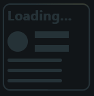
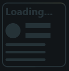

Introduction
Shimmer in Flet is a visual effect used to indicate that content is loading. It displays a subtle, animated gradient that moves across placeholder elements, giving users the impression that something is happening in the background. This helps improve user experience by making loading states look more dynamic and engaging.
 

Installing
dependencies = [
"flet-shimmer @ git+https://github.com/ositoMalvado/flet-shimmer",
...
]
Examples
import flet as ft
import random
from flet_shimmer import Shimmer, ShimmerDirection
class ShimmerExample(ft.Container):
def randomize(self, e):
self.shimmer.base_color = ft.Colors.random()
self.shimmer.highlight_color = ft.Colors.random()
self.shimmer.direction = random.choice(["rtl", "ltr", "ttb", "btt"])
self.shimmer.inclination = random.uniform(-22.5, 22.5)
self.shimmer.period = ft.Duration(milliseconds=random.randint(100, 5000))
self.shimmer.update()
def __init__(self):
super().__init__()
self.shimmer = Shimmer(
base_color=ft.Colors.random(),
highlight_color=ft.Colors.random(),
direction=random.choice(
[
ShimmerDirection.RIGHT_TO_LEFT,
ShimmerDirection.LEFT_TO_RIGHT,
ShimmerDirection.TOP_TO_BOTTOM,
ShimmerDirection.BOTTOM_TO_TOP,
]
),
inclination=random.uniform(-22.5, 22.5),
period=ft.Duration(milliseconds=random.randint(100, 5000)),
content=ft.Container(
ft.Column(
controls=[
ft.Container(
margin=ft.margin.only(left=5),
content=ft.Text(
"Loading...",
weight=ft.FontWeight.BOLD,
size=20,
text_align=ft.TextAlign.CENTER,
),
),
ft.Row(
[
ft.Container(
bgcolor="red",
height=30,
width=30,
border_radius=25,
margin=ft.margin.only(left=5),
),
ft.Column(
[
ft.Container(
bgcolor="red",
height=10,
width=50,
border_radius=random.randint(0, 5),
),
ft.Container(
bgcolor="red",
height=10,
width=50,
border_radius=random.randint(0, 5),
),
]
),
]
),
ft.Container(
expand=True,
margin=ft.margin.only(left=5),
content=ft.Column(
[
ft.Container(
border_radius=5,
height=5,
width=80,
bgcolor="red",
),
ft.Container(
border_radius=5,
height=5,
width=80,
bgcolor="red",
),
ft.Container(
border_radius=5,
height=5,
width=80,
bgcolor="red",
),
ft.Container(
border_radius=5,
height=5,
width=60,
bgcolor="red",
),
]
),
),
]
),
border=ft.border.all(2, ft.Colors.RED),
margin=5,
border_radius=random.uniform(0, 15),
on_click=self.randomize,
),
)
self.content = ft.Stack(
[self.shimmer],
expand=True,
alignment=ft.alignment.center,
)
self.expand = True
self.alignment = ft.alignment.center
def main(page: ft.Page):
page.add(
ft.GridView(
[ShimmerExample() for i in range(80)],
max_extent=150,
expand=True,
run_spacing=0,
)
)
ft.app(main)